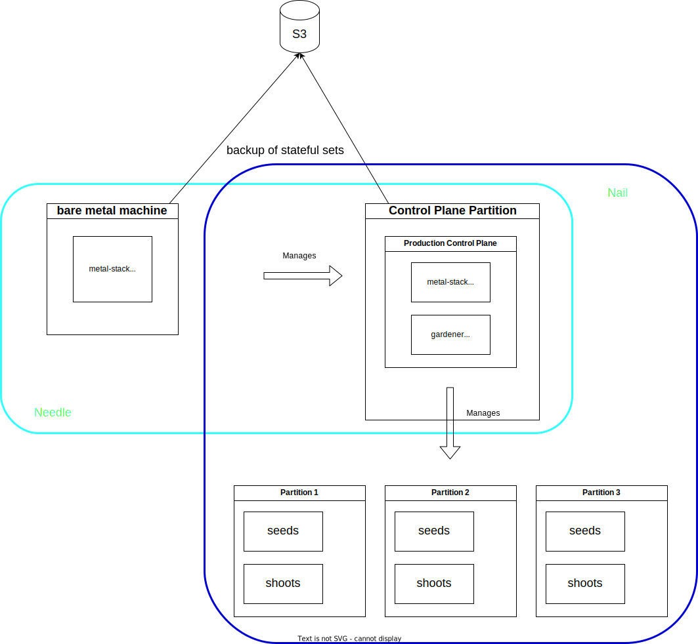

Autonomous Control Plane
As described in the deployment chapter, we strongly recommend Kubernetes as the target platform for running the metal-stack control plane.
Kubernetes clusters for this purpose are readily available from hyperscalers, metalstack.cloud, or other cloud providers. Simply using a managed Kubernetes cluster greatly simplifies a metal-stack installation. However, sometimes it might be desirable to host the metal-stack control plane autonomously, without the help of another cloud provider. Reasons for this might include corporate policies that prohibit the use of external data center products, or network constraints.
The Kubernetes cluster hosting the metal-stack control plane must provide at least the following features:
- Load balancing (for exposing the APIs)
- Persistent storage (for the databases and key-value stores)
- Access to object storage for automated backups of the stateful sets
- Access to a DNS provider supported by one of the used DNS extensions
- Externally accessible DNS records for obtaining officially signed certificates through DNS challenges
This metal-stack control plane cluster must also be highly available to prevent a complete loss of control over the managed resources in the data center. Regular Kubernetes updates to apply security fixes and feature updates must be possible in an automated manner. The Day-2 operational overhead of running this cluster in your own datacenter must be reasonable.
In this chapter, we propose a solution for setting up a metal-stack environment with an autonomous control plane that is independent of another cloud provider.
Meeting Notes
- to produce the initial cluster we can use either a single bare metal machine if HA is not a hard requirement. To achieve HA the initial cluster can be either formed from 3 bare metal machines or a single virtual machine.
- For 3 bare metal machine a loadbalancing mechanism for the ingress is required. kube-vip could be a possible solution.
- Describe how local storage works on k3s
- Monitoring backends Victoria Metrics Cluster?
- Describe day2 Scenarios for the bare metal and virtual machine initial cluster setup
- We could divide our control plane into 3 clusters metal-stack, gardener and monitoring
- Storage for the control plane is a open and difficult topic and will be clarified later. For now we start without a central storage solution and rely on backup-restore for our stateful sets.
Use Your Own Dogfood
The most obvious solutions would be to just deploy a Kubernetes cluster manually in your own data center is by utilizing existing tooling for the deployment:
- k3s
- kubeadm
- vmware and rancher
- talos
- kubespray
- ... (not a complete list)
However, all these solutions add another layer of complexity that needs to be maintained and operated by people who also need to learn and understand metal-stack. In general, metal-stack in combination with Gardener contains all the necessary tools to provide KaaS, so it makes sense to reuse what is already in place without introducing new dependencies on other products and vendors.
The only problem here is that Gardener is not yet able to create an initial cluster, which may change with the implementation of GEP-28. In the meantime, we suggest using k3s, which manages the initial metal-stack partition to host the control plane, since the maintenance overhead is acceptable and it is easy to deploy.
TODO: K3s nodes can be bare metal machines or virtual machines, when using VMs a single K3s node might be feasible, too
The Matryoshka Principle
Instead of directly using the K3s cluster for the production control plane, we propose using it as a minimal control plane cluster which only purpose it is to host the production control plane cluster. This layer of indirection brings some reasonable advantages:
- In the event of an interruption or loss of this minimal control plane cluster, the production control plane remains unaffected, and end users can continue to manage their clusters as normal.
- A dedicated operations team can take care of the Day-2 maintenance of this installation, which can be handy because the tools like
k3sare a little different from the rest of the setup (it is likely that more manual maintenance is required than for any other cluster). - Since the number of shoot clusters to host is static, the resource requirements are minimal and will not change significantly over time. There are no huge resource requirements in terms of cpu, memory and storage. As such, the lack of scalability is not such a big issue.
So, our proposal is to chain two metal-stack control planes. The initial control plane cluster would use k3s and on this cluster we can spin up a cluster for the production control plane with the use of Gardener.
Architecture

–->> TODO: continue, muss zum Klettern
A high-level architecture consists of two metal-stack.io environments, one for the control plane, the second one for the production or real environment. It might also be possible to call the initial metal-stack.io environment the metal-stack seed, and the actual production environment the metal-stack shoot.
We could even use some names for this environments which match better to metal, like needle and nail. So, a needle metal-stack is used to create a nail metal-stack environment.

The needle and the nail metal-stack have both a control plane and a set of physical bare metal machines they manage and operate on.
Needle
The needle control plane is kept very small and running inside a k3s cluster. The physical bare metal machines can be any machines and switches which are supported by metal stack, but can be smaller in terms of cpu, memory and network speed, because these machines must only be capable of running the nail metal stack control plane.
- Control Plane
In the most simple case the needle control plane is based on k3s which is running on a machine which was setup manually/partly automated with a debian:12 operating system. This machine provides a decent amount of cpu, memory and storage locally to store all persistent data. The amount of cpus and memory depends on the required size of the expected nail control plane. A typical single socket server with 8-16 cores and 64GB of RAM and two NVMe drives of 1TB would be a good starting point.
In a typical k3s setup, a stateful set would lose the data once the k3s cluster was terminated and started again. But there is a possibility to define parts of the local storage of the server to be provided to the k3s cluster for the PVCs. With that, k3s could be terminated and started again, for example to update and reboot the host os, or update k3s itself and the data will persist.
Example k3s configuration for persistent storage on the hosts os:
k3s: Cluster
apiVersion: k3s.x-k8s.io/v1alpha4
name: needle-control-plane
nodes:
- role: control-plane
# add a mount from /path/to/my/files on the host to /files on the node
extraMounts:
- hostPath: /path/to/my/files
containerPath: /files
As mentioned before, k3s is used to host the needle control plane. For a gardener managed kubernetes setup, metal-stack and gardener will be deployed into this cluster. This deployment can be done by a gitlab runner which is running on this machine. The mini-lab will be used as a base for this deployment. The current development of gardener-in-minilab must be extended to host all required extensions to make this a working metal stack control plane which can manage the machines in the attached bare metal setup.
A second k3s cluster is started on this machine to host services which are required to complete the service. A non-complete list would be:
- PowerDNS to server as a DNS Server for all dns entries which needs to be created in the needle, like api.needle.metal-stack.local, gardener-api.needle.metal-stack.local and the dns entries for the api servers of the create kubernetes clusters.
- NTP
- Monitoring for the
needlepartition ? - Optional: Container Registry to host all metal-stack and gardener containers
- Optional: Letsencrypt boulder as a certificate authority
- ...

1.1. Control Plane High Availability
Running the needle control plane on a single physical server is not as available as it should be in such a use case. It should be possible to survive a loss of this server, because the server could be lost by many events, such as hardware failure, disk corruption or even failure of the datacenter location where this server is deployed.
Setting up a second server with the same software components is an option, but the problem of data redundancy must be solved, because neither the gardener control plane, nor the metal-stack control plane can be instantiated twice.
Given that we provide part of the local storage of the server as backing storage for the stateful sets in the k3s cluster, the data stored on the server itself must be synced to a second server in some way.
Here comes DRBD into play, this is a linux kernel module which can be configured to mirror one or more local block devices to another server connected over tcp. With the help of pacemaker a coordinated failover of resources running on top of filesystems created on such replicated drbd devices, a high available stateful server pair is possible. It is also possible to prevent split brain if both servers have a out-of-band management build in with power off capability. DRBD can also be configured to sync storage between WAN links with a higher latency by using a async mechanism.
Sample drbd configuration:
resource needle-control-plane {
meta-disk internal;
device /dev/drbd0;
syncer {
verify-alg sha1;
}
net {
allow-two-primaries;
}
on needle1 {
disk /dev/nvme0n1;
address 192.168.1.101:7789;
}
on needle2 {
disk /dev/nvme0n1;
address 192.168.1.102:7789;
}
}TODO: LVM Volumes
Logical View

Physical View, minimal ha setup which is only suitable for 1 Seed and 1 Shoot

Physical View, bigger ha setup which is spread to two datacenters, capable to create 1 Seed with 3 nodes and 2 Shoots with 3 nodes each and still 2 waiting machines.

- Partition
The partition which is managed by the metal-stack needle can be a simple and small hardware setup but yet capable enough to host the metal-stack nail control plane. It can follow the metal-stack minimal setup which provides about 8-16 small servers connected to a 1G/s or 10G/s network dataplane. Central storage is optional as the persistence of the services running in these clusters is always backed up to a central object storage. Operations would be much easier if a central storage is provided.
A seed must be created which is responsible for hosting the control planes of the shoots in this partition. The amount of shoots should be minimal, most of the time, two shoots, one for hosting gardener and one for metal-stack.

- Network Diagram
TODO: Where to connect the needle servers
Nail
nail is the metal-stack environment which serves for end user production use, the control plane is running in a shoot which in the needle and the seed(s) and shoot(s) for end users are created on the machines provided by this environment. These machines can be of a different type in terms of size, but more importantly, these machines are connected to another network dataplane. Also the management infrastructure is separated from the needle management.
Failure Scenarios
Everything could fail, everything will fail at some point. But this must kept in mind and nothing bad should happen if only one component at a time fails. If more than one fails, the restoration to a working state must be easily possible and well documented.
We must ensure both. To ensure we have all possible breakages in mind, we collect a list of them here and explain what impact a certain failure have.
| Scenario | expected outage |
|---|---|
| k3s cluster gone | management of needle infrastructure not possible anymore |
Open Topics
- Naming of the metal-stack chain elements, is
needleandnailappropriate ? - Storage in the
needlepartition- MinIO DirectPV –> new to me, dont know exactly how this works, looks interesting
- Lightbits
- Diskomator –> Crazy
- the needle server as initiator, maybe also replicated with drbd ?
- Storage Appliance like Synology
- CubeFS
- TrueNAS
- NetApp
- S3 Object storage is considered as provided
- AirGapped is out of scope for now
- IP address ranges and families
- Consider Autonomous Shoots for the
needleseed - Take a look at: Description of a Microdatacenter